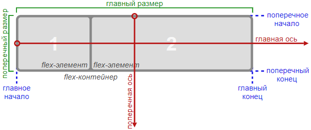

Изучи FlexBox!
Блоки легко становятся гибкими, элементы могутснижатся и растягиваться, заполняя пространство
Нет никаких проблем с тем, чтобы выровнять элементыпо вертикали и горизонтали
Неважно, в каком порядке расположены HTML-элементы.Вы можете изменить их порядок через CSS
Очень простая адаптация под направление текста RTL(right-to-left). Если в браузере установлена локаль RTL,все flex-элементы автомотически отобразятсяв обратном порядке

Что такое FlexBox?
Модуль гибких блоков(англ. FlexBox Layout Module) был представлен W3C как более эффективный инструмент для создания разметки, выравнивания и расположения элементов на веб странице, даже если их размеры неизвестны (отсюда и слово «flex», что в переводе с английского означает «гибкость»)
Основная идея flexbox (так сокращенно называют этот модуль) — это дать возможность контейнеру изменять ширину, высоту и порядок дочерних элементов так, чтобы доступное пространство заполнялось наилучшим образом (в основном это нужно для обеспечения адаптивности веб-страницы). Flex-контейнер расширяет свои элементы с целью заполнения свободного места либо сжимает их, чтобы предотвратить переполнение
Некоторые CSS-свойства для flex-контейнера
Свойство flex-direction
Позволяет управлять направлением главной оси flex- контейнера. Данное свойство предназначено для применения к контейнерам и принимает следующие значения: row, row-reverse, column, column-reverse
Свойство justify-content
Вы можете указать flex-контейнеру, каким образом будут выравниваться его дочерние элементы вдоль главной оси. Свойство justify-content применяется к flex-контейнеру, и принимает такие значения: flex-start, flex-end, center, space-between, space-around
Свойство align-items
Align-items — еще одно свойство, применяемое к flex- контейнеру для выравнивания его дочерних элементов. Только на этот раз выравнивание происходит не по главной оси, а по поперечной. Принимает следующие значения: stretch, flex-start, flex- end, center, baseline